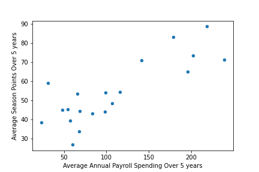
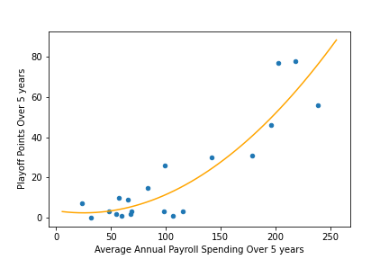
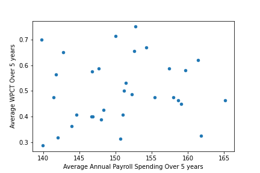
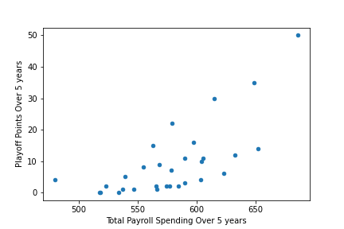
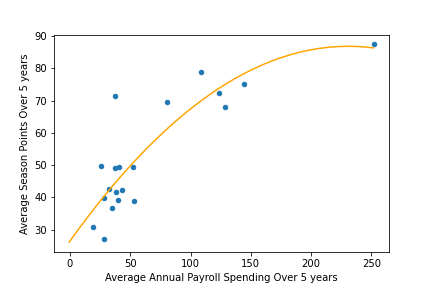

Background
I am a sports fan. And as many sports fans, I always lamented the fact that richer teams can simply afford better players and managers to stay on top. My dad, who is a Manchester City fan, would often respond to my accusations of his favorite team being an "oil club" by saying that City players and coaches are simply talented, and money is not always the decisive factor in determining who wins. This project is personally motivated by these debates about whether wealth determines success in sports.
Objective
Scrape payroll and transfer spending data for teams across 5 different sports and 7 major leagues. Design a composite success metric covering both regular season and playoff performance. Visualize and statistically test the correlation between spending and success in each league, and assess whether the relationship holds universally or varies by sport structure and salary cap rules.
Outcome
Across 7 leagues, the relationship between spending and success varies dramatically by sport structure. Open markets and individual-heavy sports show strong correlations, while hard salary caps and team-oriented sports show near zero.
Key Findings
EPL and Serie A show Pearson's correlations above 0.8 between payroll and both season points and playoff performance. With no meaningful salary cap, spending is nearly a prerequisite for success.
Despite being the same sport, MLS shows a much weaker payroll correlation and near-zero transfer spending correlation — explained by the draft system, salary cap, and the league's lower global standing attracting fewer high-value transfers.
The strictest salary cap of any North American league, combined with football's reliance on team coordination over individual star power and its short season, produces scatter plots that look nearly random.
Individual star player impact (LeBron, Curry) and a soft cap with numerous exceptions (Larry Bird Rule, Mid-Level Exception) make payroll a meaningful predictor of both regular season and playoff success.
In all leagues except NHL, the correlation between spending and playoff points is higher than with regular season performance — the opposite of what randomness in knockout tournaments would suggest.
Screenshots — click to enlarge




